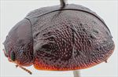
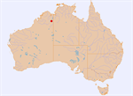

Click on images to enlarge
{kind=link}

Female, Purnululu N.P., N.W. Western Australia.
{kind=link}

Distribution
Name
Trachymela sp. Ta135
Reference specimen
2007-254c, Purnululu N.P., N.W. Western Australia.
Adult Description
Length: ♀ 6.1-6.2 mm [2], ♂ ? mm [0].
Colour: head dark-brown, mandibles dark-brown with black tips; labrum straw-brown; antennomeres 1-7 light to mid-brown, 8-11 similar or fractionally darker; pronotum: dark brown, similar shade as head, disc sometimes with a black mark on each side that extends laterally, a round black mark is present in foveal area behind each eye; scutellum: black or very dark brown bordered in black; elytra: dark-brown, same shade as pronotum, scattered with black pustules and raised interstices, a large black raised area may be present in centre of edge of disc, elytral suture black in anterior half, the black sometimes broadened substantially around elytral summit , punctures are similar in colour as interstices, humeral callus slighly darker than surround or black; venter: relatively uniformly dark to very dark reddish-brown, inside surface of epipleura black, with a thin strip along outside margin brown. Cuticular wax: unknown.
Shape: noticeably flattened (H/BL ♂=?%BL, ♀=0.42%BL), greatest height viewed laterally is about middle of elytral margin; Head; puncture size variable, moderate to coarse (pd~2-3xef), slightly uneven; small, elevated areas sometimes present behind fronto-clypeal suture. Antennae short (AL ♂=?%BL, ♀=32.3%BL), filiform. Pronotum; almost evenly curved transversely between foveal areas with lateral margins noticeably explanate, foveal depression absent with a clearly defined, almost round and slighly more sparsely punctured elevated area in middle in its stead, puncturation on disc clearly impressed, similar or slightly smaller than on head, evenly to somewhat unevenly and moderately densely distributed in discal area with much finer punctures scattered between them, punctures becoming much coarser from level of inner edge of eye to lateral margins. Front margins join lateral margins in a smoothly rounded right-angle, with lateral margin almost straight or very lightly curved for more than half its length before curvature increases towards rear margin, broadest point is just before rear margin. Scutellum; unpunctured or sparsely punctured, with punctures smaller and less clearly impressed than those on adjacent area of pronotum. Elytra; surface evenly curved transversely, lightly curved longitudinally in anterior half, then noticeably more strongly curved towards apex, a very shallow depression extends across surface just in front of middle, punctures moderate-sized and distinct and relatively evenly distributed between mostly small isolated verrucae, verrucae and elevated areas not clearly aligned within longitudinal series, longitudinal ridges may be present, particularly VR3 anterior to median depression and VR9 towards elytral apex, a slightly raised transverse ridge is present just behind median depression, surface continuous or very slightly discontinuous under humeral callus, suture carinate in posterior third, lateral margins straight or slightly curved, rarely oblique in anterior third. Vertical extension of epipleura moderate (HCE/PW=0.40). Venter; Prosternal process almost parallel-sided and broad, rarely broadest anteriorly, open anteriorly, setae sparsely scattered over prosternal process and mesosternum, a single seta on anterior and median trochanter; front edge of metasternum beveled, truncate; inner edge of posterior of epipleurae lacking setae, or setae very small, sparse and difficult to discern. Aedeagus; unknown.
Larvae
unknown.
Eggs
unknown.
Similar species
Ta216 – this species from the drier areas of Queensland west of the Great Dividing Range is very similar in most respects to Ta135. The elytral punctures are more densely distributed in Ta135, and the transverse weal is better-defined in both specimens of Ta135 than in any of the specimens of Ta216. Ta135 tends to be lighter in colour than Ta216 ventrally.
Notes
Ta135 has been recorded on the box eucalypt Eucalyptus limitaris (Symphyomyrtus: Adnataria). Morphologically, the two collected individuals closely resemble Ta216, and both species appear to utilise closely related Adnataria hosts. Although their known geographical distributions are widely separated, they may represent a single, widely distributed species. However, due to the absence of Ta135 males for comparison and a lack of specimens from the intervening geographic range, the two species are considered distinct in this treatment.
Copyright © 2026. All rights reserved.